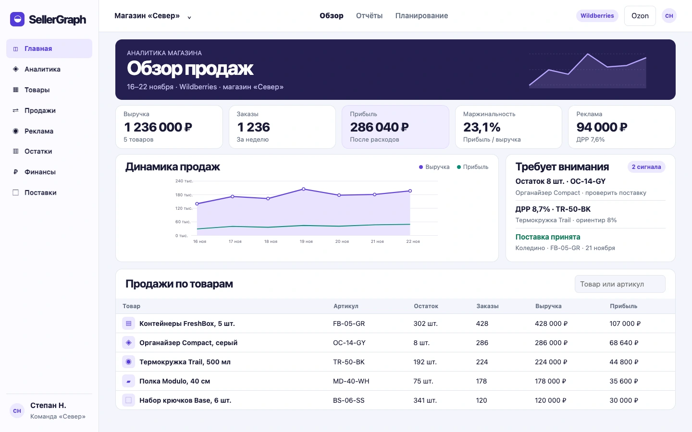
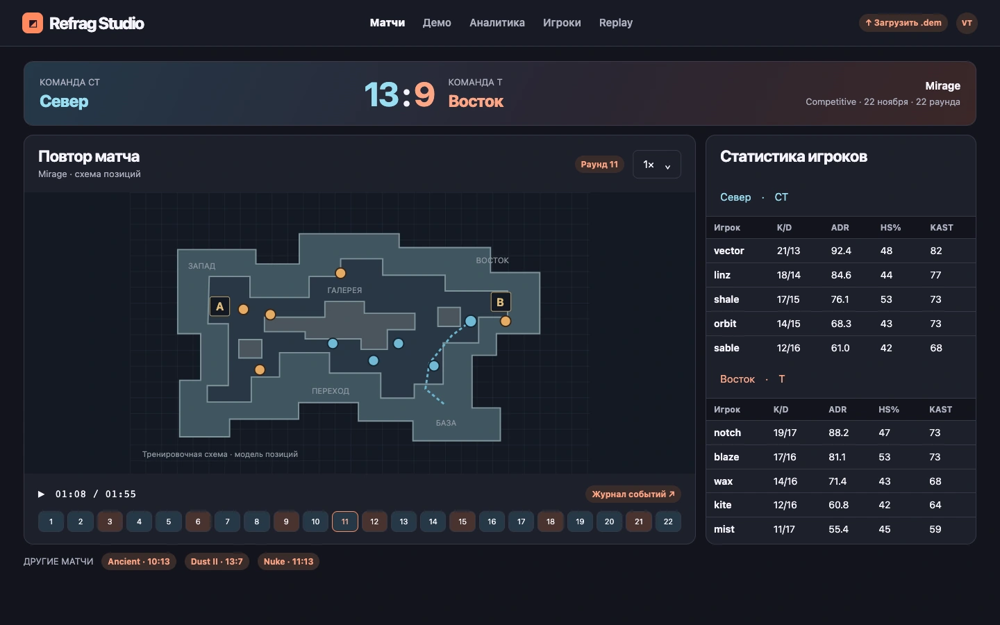
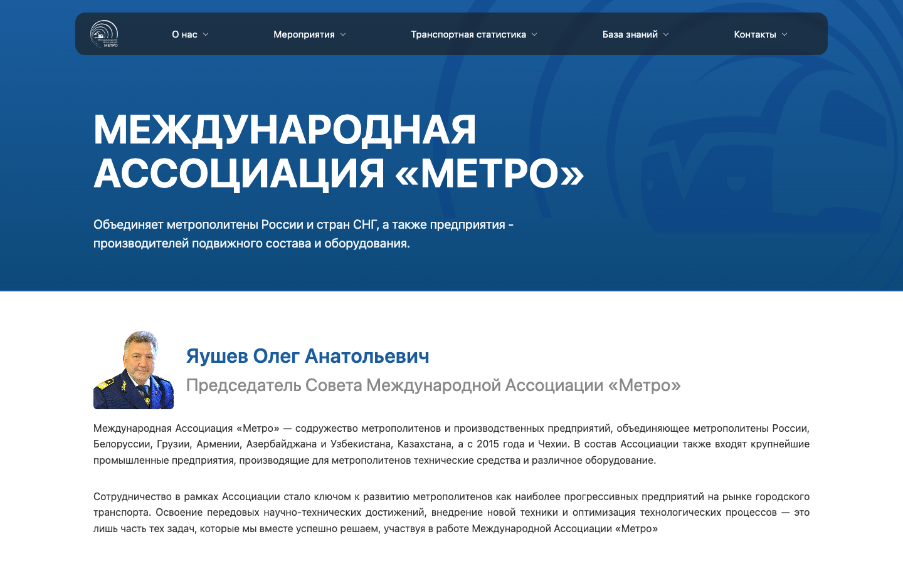
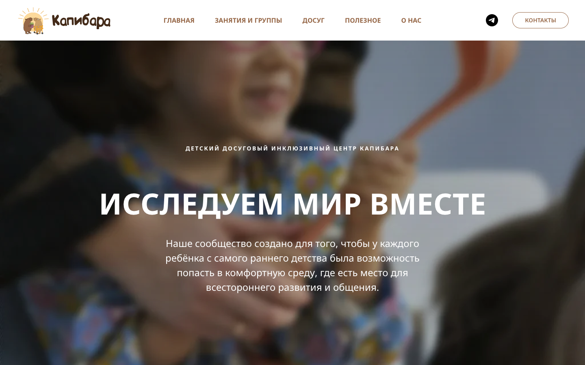

01 / АНАЛИТИКА МАРКЕТПЛЕЙСОВ

SellerGraph
Платформа аналитики для продавцов Wildberries и Ozon: продажи, себестоимость, остатки, реклама, поставки и командная работа.
РАССМАТРИВАЮ IT-ПРОЕКТЫ И ПРЕДЛОЖЕНИЯ О РАБОТЕ
IT Project Lead.
Системный анализ.
Разработка.
Руковожу техническими проектами, разбираюсь в задачах бизнеса и работаю с кодом. Координирую frontend/backend, развиваю цифровые продукты и внедряю AI-инструменты в процесс разработки.
Смотреть реализованные проекты/ ПРОФЕССИОНАЛЬНЫЙ ПРОФИЛЬ
Вёл frontend/backend-разработку, клиентские сайты и внутренние сервисы. Сам работал с интерфейсами, API, Docker, базами данных и тестами. Умею переводить бизнес-запрос в конкретные задачи и контролировать исполнение.
/ 01 — ПОРТФОЛИО
Откройте кейс, чтобы увидеть интерфейс, технологии, задачи и мою роль.

Платформа аналитики для продавцов Wildberries и Ozon: продажи, себестоимость, остатки, реклама, поставки и командная работа.

Платформа анализа Counter-Strike 2: загрузка .dem, разбор матчей, 2D replay, графики прогресса и персональная статистика.

Корпоративный веб-портал Международной ассоциации «Метро» с административной частью и управлением материалами.
Открыть сайт
Сайт организации, помогающей детям с инвалидностью и их семьям: программы, информация и понятные пользовательские маршруты.
Открыть сайтСайт компании по IT-аутсорсингу и обслуживанию оборудования: услуги, заявки клиентов и информация о компании.
Открыть сайтСистема анализа криптовалютных фьючерсов: сигналы, многофакторная оценка, мониторинг и виртуальная торговля.
Личная рабочая платформа для проектов, задач команды, ТЗ, рисков, релизов, отчетов и базы знаний.
Связка веб-интерфейса и Telegram-бота для сбора параметров заказа, фотографий, файлов и подготовки расчета.
Портал «Точка», онлайн-школа и страницы образовательных сервисов колледжа с удобной структурой и пользовательскими сценариями.
Рабочие процессы учебной организации: структурирование обращений и заявок, статусы обработки и контроль исполнителей.
/ 02 — НАВЫКИ И ИНСТРУМЕНТЫ
От требований и управления командой до самостоятельной работы с кодом, инфраструктурой и AI-assisted разработкой.
Работа с заказчиком, ТЗ, декомпозиция, планирование, распределение задач, контроль разработки, приемка и релиз.
Frontend и backend, API, базы данных, интеграции, Docker, диагностика ошибок, тестирование и сопровождение.
Продуктовые сценарии, роли пользователей, работа с данными, бизнес-процессы и развитие цифровых сервисов.
Codex, ChatGPT, Claude Code и другие инструменты для ускорения прототипирования, проверки кода и автоматизации.
Сбор требований, интервью с заказчиком, ТЗ, декомпозиция, оценка задач, backlog, roadmap, приоритеты, контроль сроков, релизы, приемка, команда frontend/backend, управление изменениями, документация.
Описание бизнес-процессов и пользовательских сценариев, BPMN (основы), user stories, функциональные требования, API-контракты, модель ролей, интеграции, тест-кейсы, согласование решений.
HTML5, CSS3, адаптивная верстка, JavaScript, TypeScript, React, Next.js, Tailwind CSS, UI-компоненты, маршрутизация, формы, таблицы, web-дизайн, CMS.
Python, FastAPI, Node.js, NestJS/Fastify, REST API, OpenAPI/Swagger, WebSocket, авторизация и роли, очереди и фоновые задачи, Telegram Bot API, сторонние API.
SQL, PostgreSQL, MySQL, Redis, Prisma, схемы данных, миграции, права доступа, работа с запросами и сущностями.
Git, GitHub, Docker, Docker Compose, Linux/Ubuntu, веб-серверы, HTTPS, работа с конфигурацией окружений, диагностикой логов и сборок.
Unit-, контрактные, API- и браузерные тесты, проверка сценариев, управление доступом, cookie, CSRF, tenant isolation, диагностика frontend/backend ошибок.
ChatGPT, OpenAI Codex, Claude Code, Cursor, GitHub Copilot, prompt engineering, генерация и проверка кода, документирование, прототипирование и автоматизация работы.
Figma, Photoshop, Tilda, WordPress, VS Code, GitHub, таск-трекеры, взаимодействие с дизайном, UX, демо и презентации результатов.
LLM-агенты, tool calling, RAG, Langflow, Dify, n8n, оценка качества AI-сценариев. Интересуюсь продуктовой аналитикой и развитием в системном анализе.
/ 03 — КАРЬЕРА
Роли и периоды по моему резюме: руководство разработкой, работа с клиентскими IT-проектами, веб-разработка и техническая поддержка.
СЕНТЯБРЬ 2025 — ОКТЯБРЬ 2026
Руководитель команды разработки IT-продуктов
Руководил frontend- и backend-направлениями: собирал и уточнял требования, распределял задачи, контролировал сроки, качество, приёмку и выпуск. Параллельно преподавал IT-дисциплины и курировал практическую работу.
АПРЕЛЬ 2022 — МАЙ 2024
Technical Project Manager
Вёл технические web-проекты для частных заказчиков и небольших команд. Общался с клиентами, переводил запросы в ТЗ, декомпозировал задачи, координировал разработку и контролировал результат.
ЯНВАРЬ 2024 — АПРЕЛЬ 2024
IT-специалист · Выборы Президента РФ
Отвечал за подготовку, настройку и поддержку технической инфраструктуры в период проведения выборов, решал возникающие технические вопросы.
АВГУСТ 2023 — ОКТЯБРЬ 2023
IT-специалист · Выборы Мэра Москвы
Настройка и обслуживание IT-оборудования и сервисов, техническая поддержка и оперативное устранение неисправностей.
ЯНВАРЬ 2023 — АВГУСТ 2023
Web-разработчик / IT-специалист
Разрабатывал и сопровождал веб-сервисы колледжа: страницы, интерфейсы, работа с контентом, адаптивная верстка и техническая поддержка.
/ 04 — ОБО МНЕ
СТЕПАН НОВОСЕЛОВ / МОСКВА
Начинал с веб-разработки и технической поддержки, затем перешел к координации команд и ведению IT-проектов. Умею разговаривать с заказчиком и с разработчиками, разбирать требования, проверять гипотезы и внедрять изменения.
Продолжаю развиваться в управлении продуктами, системном анализе, backend-разработке и практическом использовании LLM-инструментов.
ОБРАЗОВАНИЕ
ПРОФЕССИОНАЛЬНЫЙ ИНТЕРЕС
Technical Project Manager · Руководитель IT-проектов · Системный аналитик · IT Delivery · AI-assisted development.